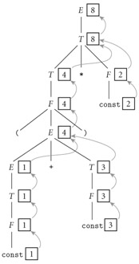
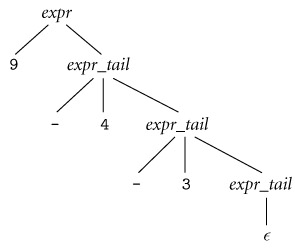
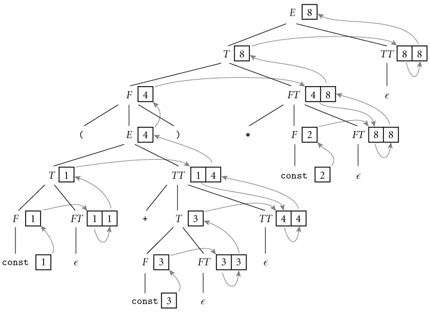
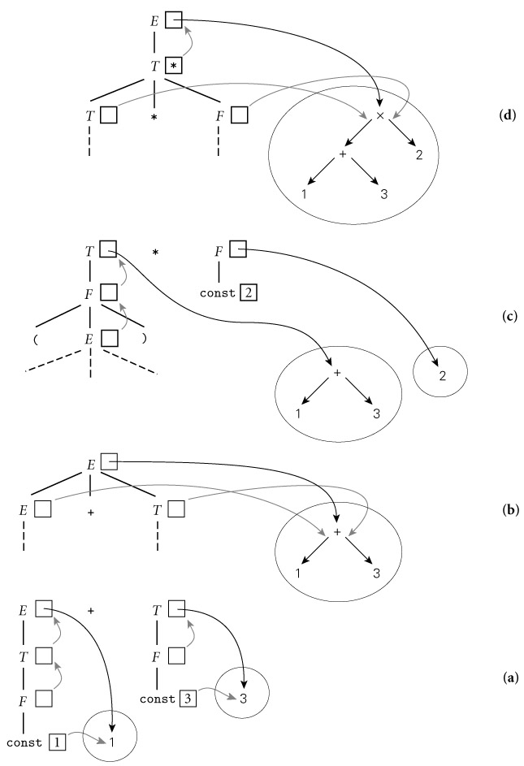

|
|
|
|
4.3 Evaluating Attributes
Example
4.6: Decoration of a parse tree
|
|
The process of evaluating attributes is called annotation
or decoration of the parse tree. Figure
4.2 shows how to decorate the parse tree for the expression (1
+ 3) * 2, using the AG of Figure 4.1. Once decoration is complete, the value of the
overall expression can be found in the val attribute of the root of the tree.

Figure 4.2: Decoration
of a parse tree for (1
+ 3) * 2,
using the attribute grammar of Figure 4.1. The val attributes of symbols are shown in boxes. Curving
arrows show the attribute flow, which is strictly upward in this case. Each box
holds the output of a single semantic rule; the arrow(s) entering the box
indicate the input(s) to the rule. At the second level of the tree, for
example, the two arrows pointing into the box with the 8 represent application
of the rule T1.val ―= product(T2.val, F.val).
|
|
The attribute grammar of Figure 4.1 is very simple. Each symbol has at most one
attribute (the punctuation marks have none). Moreover, they are all so-called synthesized
attributes: their values are calculated (synthesized) only in productions
in which their symbol appears on the left-hand side. For annotated parse trees
like the one in Figure
4.2, this means that the attribute flow―the pattern in which
information moves from node to node―is entirely bottom-up.
An attribute grammar in which all attributes are synthesized
is said to be S-attributed. The arguments to semantic functions in an
S-attributed grammar are always attributes of symbols on the right-hand side of
the current production, and the return value is always placed into an attribute
of the left-hand side of the production. Tokens (terminals) often have intrinsic
properties (e.g., the character-string representation of an identifier or the
value of a numeric constant); in a compiler these are synthesized attributes
initialized by the scanner.
In general, we can imagine (and will in fact have need of)
attributes whose values are calculated when their symbol is on the right-hand
side of the current production. Such attributes are said to be inherited.
They allow contextual information to flow into a symbol from above or from the
side, so that the rules of that production can be enforced in different ways
(or generate different values) depending on surrounding context. Symbol table
information is commonly passed from symbol to symbol by means of inherited
attributes. Inherited attributes of the root of the parse tree can also be used
to represent the external environment (characteristics of the target machine,
command-line arguments to the compiler, etc.).
Example
4.7: Top-down CFG and parse tree for subtraction
|
|
As a simple example of inherited attributes, consider the
following simplified fragment of an LL(1) expression grammar (here covering
only subtraction):
§ expr → const expr_tail
§ expr_tail → -const expr_tail | ∊
For the expression 9 - 4 - 3, we obtain the following parse tree:

|
|
If we want to create an attribute grammar that accumulates
the value of the overall expression into the. root of the tree, we have a
problem: because subtraction is left associative, we cannot summarize the right
subtree of the root with a single numeric value. If we want to decorate the
tree bottom-up, with an S-attributed grammar, we must be prepared to describe
an arbitrary number of right operands in the attributes of the top-most expr_tail
node (see Exercise 4.4). This is indeed possible, but it defeats the purpose of
the formalism: in effect, it requires us to embed the entire tree into the
attributes of a single node, and do all the real work inside a single semantic
function.
Example 4.8: Decoration with left-to-right
attribute flow
|
|
If, however, we are allowed to pass attribute values not
only bottom-up but also left-to-right in the tree, then we can pass the 9 into the top-most expr_tail node, where it can be
combined (in proper left-associative fashion) with the 4. The resulting 5 can then be passed into the middle expr_tail
node, combined with the 3 to make 2, and then passed upward to the root:
|
|
Example
4.9: Top-down AG for subtraction
|
|
To effect this style of decoration, we need the following
attribute rules:
§ expr → const expr_tail
o
⊲ expr_tail.st := const.val
o
⊲ expr.val := expr_tail.val
§ expr_tail1 → -
const expr_tail2
o
⊲ expr_tail2.st :=
expr_tail1.st - const.val
o ⊲ expr_tail1.val := expr_tail2.val
§ expr_tail → ∊
o ⊲ expr_tail.val := expr_tail.st
In each of the first two productions, the first rule serves
to copy the left context (value of the expression so far) into a
"subtotal" (st) attribute; the second rule copies the final value
from the right-most leaf back up to the root. In the expr_tail nodes of
the picture in Example
4.8, the left box holds the st attribute; the right holds val.
|
|
Example
4.10: Top-down AG for constant expressions
|
|
We can flesh out the grammar fragment of Example
4.7 to produce a more complete expression grammar, as shown (with shorter
symbol names) in Figure
4.3. The underlying CFG for this grammar accepts the same language as the
one in Figure 4.1, but where that one was SLR(1), this one is
LL(1). Attribute flow for a parse of (1 + 3) *
2, using the LL(1) grammar, appears
in Figure
4.4. As in the grammar fragment of Example
4.9, the value of the left operand of each operator is carried into the TT
and FT productions by the st (subtotal) attribute. The relative
complexity of the attribute flow arises from the fact that operators are left associative,
but the grammar cannot be left recursive: the left and right operands of a
given operator are thus found in separate productions. Grammars to perform
semantic analysis for practical languages generally require some
non―S-attributed flow.
|
|
|
⊲
TT.st := T.val |
⊲
E.val := TT.val |
2.
TT1 → + T TT2
|
⊲
TT2.st := TT1.st + T.val |
⊲
TT1.val := TT2.val |
3.
TT1 → - T
TT2
|
⊲
TT2.st := TT1.st - T.val |
⊲
TT1.val := TT2.val |
4.
TT → ∊
§ ⊲
TT.val := TT.st
5.
T → F FT
|
⊲
FT.st := F.val |
⊲
T.val := FT.val |
6.
FT1 → * F
FT2
|
⊲
FT2.st := FT1.st × F.val |
⊲
FT1.val := FT2.val |
7.
FT1 → / F
FT2
|
⊲
FT2.st := FT1.st ÷ F.val |
⊲
FT1.val := FT2.val |
8.
FT → ∊
§ ⊲
FT.val := FT.st
9.
F1 → - F2
§ ⊲ F1.val
:= - F2.val
10.
F → ( E )
§ ⊲
F.val := E.val
11.
F → const
§ ⊲
F.val := const.val
|
|
Figure 4.3: An
attribute grammar for constant expressions based on an LL(1) CFG. In this grammar several productions
have two semantic rules.

Figure 4.4: Decoration
of a top-down parse tree for (1 + 3) * 2, using the AG of Figure
4.3.
Curving arrows again indicate attribute flow; the arrow(s) entering a given box
represent the application of a single semantic rule. Flow in this case is no
longer strictly bottom-up, but it is still left-to-right. At FT and TT
nodes, the left box holds the st attribute; the right holds val.
|
|
Just as a context-free grammar does not specify how it
should be parsed, an attribute grammar does not specify the order in which
attribute rules should be invoked. Put another way, both notations are declarative:
they define a set of valid trees, but they don't say how to build or decorate
them. Among other things, this means that the order in which attribute rules
are listed for a given production is immaterial; attribute flow may require
them to execute in any order. If, in Figure
4.3, we were to reverse the order in which the rules appear in productions
1, 2, 3, 5, 6, and/or 7 (listing the rule for symbol.val first), it would be a
purely cosmetic change; the grammar would not be altered.
We say an attribute grammar is well defined if its
rules determine a unique set of values for the attributes of every possible parse
tree. An attribute grammar is noncircular if it never leads to a parse
tree in which there are cycles in the attribute flow graph―that is, if no
attribute, in any parse tree, ever depends (transitively) on itself. (A grammar
can be circular and still be well defined if attributes are guaranteed to
converge to a unique value.) As a general rule, practical attribute grammars
tend to be noncircular.
An algorithm that decorates parse trees by invoking the
rules of an attribute grammar in an order consistent with the tree's attribute
flow is called a translation scheme. Perhaps the simplest scheme is one
that makes repeated passes over a tree, invoking any semantic function whose
arguments have all been defined, and stopping when it completes a pass in which
no values change. Such a scheme is said to be oblivious, in the sense
that it exploits no special knowledge of either the parse tree or the grammar.
It will halt only if the grammar is well defined. Better performance, at least
for noncircular grammars, may be achieved by a dynamic scheme that
tailors the evaluation order to the structure of a given parse tree, for example by constructing a topological sort of
the attribute flow graph and then invoking rules in an order consistent with
the sort.
The fastest translation schemes, however, tend to be static―based
on an analysis of the structure of the attribute grammar itself, and then
applied mechanically to any tree arising from the grammar. Like LL and LR
parsers, linear-time static translation schemes can be devised only for certain
restricted classes of grammars. S-attributed grammars, such as the one in Figure 4.1, form the simplest such class. Because attribute
flow in an S-attributed grammar is strictly bottom-up (see Figure
4.2), attributes can be evaluated by visiting the nodes of the parse tree
in exactly the same order that those nodes are generated by an LR-family
parser. In fact, the attributes can be evaluated on the fly during a bottom-up
parse, thereby interleaving parsing and semantic analysis (attribute
evaluation).
The attribute grammar of Figure
4.3 is a good bit messier than that of Figure 4.1, but it is still L-attributed: its
attributes can be evaluated by visiting the nodes of the parse tree in a single
left-to-right, depth-first traversal (the same order in which they are visited
during a top-down parse―see Figure
4.4). If we say that an attribute A.s depends on an attribute B.t if
B.t is ever passed to a semantic function that returns a value for A.s, then we
can define L-attributed grammars more formally with the following two rules:
(1) each synthesized attribute of a left-hand-side symbol depends only on that
symbol's own inherited attributes or on attributes (synthesized or inherited)
of the production's right-hand-side symbols, and (2) each inherited attribute
of a right-hand-side symbol depends only on inherited attributes of the
left-hand-side symbol or on attributes (synthesized or inherited) of symbols to
its left in the right-hand-side.
Because L-attributed grammars permit rules that initialize
attributes of the left-hand side of a production using attributes of symbols on
the right-hand side, every S-attributed grammar is also an L-attributed
grammar. The reverse is not the case: S-attributed grammars do not permit the
initialization of attributes on the right-hand side, so there are L-attributed
grammars that are not S-attributed.
On the CD S-attributed attribute grammars are the most general
class of attribute grammars for which evaluation can be implemented on the fly
during an LR parse. L-attributed grammars are the most general class for which
evaluation can be implemented on the fly during an LL parse. If we interleave
semantic analysis (and possibly intermediate code generation) with parsing,
then a bottom-up parser must in general be paired with an S-attributed
translation scheme; a top-down parser must be paired with an L-attributed
translation scheme. (Depending on the structure of the grammar, it is often
possible for a bottom-up parser to accommodate some non―S-attributed attribute
flow; we consider this possibility in Section 4.5.1.) If we choose to separate
parsing and semantic analysis into separate passes, then the code that builds
the parse tree or syntax tree must still use an S-attributed or L-attributed
translation scheme (as appropriate), but the semantic analyzer can use a more
powerful scheme if desired. There are certain tasks, such as the generation of
code for "short-circuit" Boolean expressions (to be discussed in Sections 6.1.5 and 6.4.1), that are easiest to accomplish with a
non―L-attributed scheme.
A compiler that interleaves semantic analysis and code
generation with parsing is said to be a one-pass compiler. [4] It is unclear whether interleaving
semantic analysis with parsing makes a compiler simpler or more complex; it's
mainly a matter of taste. If intermediate code generation is interleaved with
parsing, one need not build a syntax tree at all (unless of course the syntax
tree is the intermediate code). Moreover, it is often possible to write
the intermediate code to an output file on the fly, rather than accumulating it
in the attributes of the root of the parse tree. The resulting space savings
were important for previous generations of computers, which had very small main
memories. On the other hand, semantic analysis is easier to perform during a
separate traversal of a syntax tree, because that tree reflects the program's
semantic structure better than the parse tree does, especially with a top-down
parser, and because one has the option of traversing the tree in an order other
than that chosen by the parser.
Example
4.11: Bottom-up and top-down AGs to build a syntax tree
|
|
If we choose not to interleave parsing and semantic
analysis, we still need to add attribute rules to the context-free grammar, but
they serve only to create the syntax tree―not to enforce semantic rules or
generate code. Figures
4.5 and 4.6
contain bottom-up and top-down attribute grammars, respectively, to build a
syntax tree for constant expressions. The attributes in these grammars hold
neither numeric values nor target code fragments; instead they point to nodes
of the syntax tree. Function make_leaf returns a pointer to a newly allocated
syntax tree node containing the value of a constant. Functions make_un_op and
make_bin_op return pointers to newly allocated syntax tree nodes containing a
unary or binary operator, respectively, and pointers to the supplied
operand(s). Figures
4.7 and 4.8 show stages in the decoration of parse trees for (1
+ 3) * 2,
using the grammars of Figures
4.5 and 4.6,
respectively. Note that the final syntax tree is the same in each case.
|
|
o
⊲ E1.ptr :=
make_bin_op("+", E2.ptr, T.ptr)
§ E1 → E2
- T
o
⊲ E1.ptr :=
make_bin_op("-", E2.ptr, T.ptr)
§ E
→ T
o
⊲
E.ptr := T.ptr
§ T1 → T2
* F
o
⊲ T1.ptr
:= make_bin_op("×", T2.ptr, F.ptr)
§ T1 → T2
/ F
o
⊲ T1.ptr
:= make_bin_op("÷", T2.ptr, F.ptr)
§ T
→ F
o
⊲
T.ptr := F.ptr
§ F1 → - F2
o
⊲ F1.ptr
:= make_un_op("+/-", F2.ptr)
§ F
→ ( E )
o
⊲
F.ptr := E.ptr
§ F
→ const
o
⊲
F.ptr := make_leaf(const.val)
|
|
Figure 4.5: Bottom-up
(S-attributed) attribute grammar to construct a syntax tree. The symbol +/-
is used (as it is on calculators) to indicate change of sign.
|
|
o
⊲ TT.st := T.ptr
o
⊲ E.ptr := TT.ptr
§ TT1 → + T TT2
o
⊲ TT2.st := make_bin_op("+",
TT1.st, T.ptr)
o
⊲ TT1.ptr := TT2.ptr
§ TT1 → - T
TT2
o
⊲ TT2.st
:= make_bin_op("-", TT1.st, T.ptr)
o
⊲ TT1.ptr
:= TT2.ptr
§ TT
→ ∊
o
⊲
TT.ptr := TT.st
§ T
→ F FT
o
⊲
FT.st := F.ptr
o
⊲
T.ptr := FT.ptr
§ FT1 → * F
FT2
o
⊲ FT2.st
:= make_bin_op("×", FT1.st, F.ptr)
o
⊲ FT1.ptr
:= FT2.ptr
§ FT1 → / F
FT2
o
⊲ FT2.st
:= make_bin_op("÷", FT1.st, F.ptr)
o
⊲ FT1.ptr
:= FT2.ptr
§ FT
→ ∊
o
⊲
FT.ptr := FT.st
§ F1 → - F2
o
⊲ F1.ptr
:= make_un_op("+/-", F2.ptr)
§ F
→ ( E )
o
⊲
F.ptr := E.ptr
§ F
→ const
o
⊲
F.ptr := make_leaf(const.val)
|
|
Figure 4.6: Top-down
(L-attributed) attribute grammar to construct a syntax tree. Here the st attribute, like the ptr
attribute (and unlike the st attribute of Figure
4.3), is a pointer to a syntax tree node.

Figure 4.7: Construction
of a syntax tree for (1
+ 3) * 2
via decoration of a bottom-up parse tree, using the grammar of Figure
4.5.
This figure reads from bottom to top. In diagram (a), the values of the
constants 1 and 3
have been placed in new syntax tree leaves. Pointers to these leaves propagate
up into the attributes of E and T. In (b), the pointers to these
leaves become child pointers of a new internal +
node. In (c) the pointer to this node propagates up into the attributes of T,
and a new leaf is created for 2. Finally, in (d), the pointers from
T and F become child pointers of a new internal × node, and a
pointer to this node propagates up into the attributes of E.
Design & Implementation
On the CD In Sections 3.3.3 and 3.4.1 we noted that the scope rules of
many languages require names to be declared before they are used, and provide
special mechanisms to introduce the forward references needed for recursive
definitions. While these rules may help promote the creation of clear,
maintainable code, an equally important motivation, at least historically, was
to facilitate the construction of one-pass compilers. With increases in memory
size, processing speed, and programmer expectations regarding the quality of
code improvement, multipass compilers have become ubiquitous, and language
designers have felt free (as, for example, in the class declarations of C++, Java,
and C#) to abandon the requirement that declarations precede uses.
|
|
|
|
1.
What
determines whether a language rule is a matter of syntax or of static
semantics?
2.
Why
is it impossible to detect certain program errors at compile time, even though
they can be detected at run time?
3.
What
is an attribute grammar?
4.
What
are programming assertions? What is their purpose?
5.
What
is the difference between synthesized and inherited attributes?
6.
Give
two examples of information that is typically passed through inherited
attributes.
7.
What
is attribute flow?
8.
What
is a one-pass compiler?
9.
What
does it mean for an attribute grammar to be S-attributed? L-attributed?
Noncircular? What is the significance of these grammar classes?
[4]Most authors use the term one-pass only for compilers
that translate all the way from source to target code in a single pass. Some
authors insist only that intermediate code be generated in a single pass, and
permit additional pass(es) to translate intermediate code to target code.